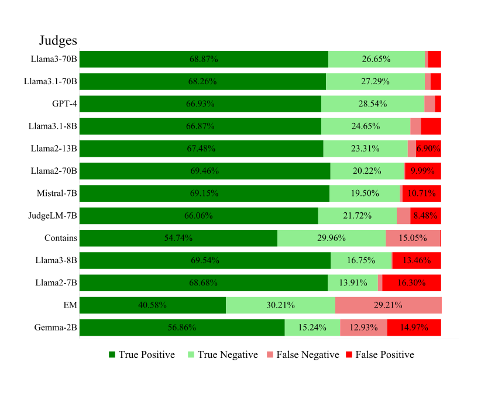
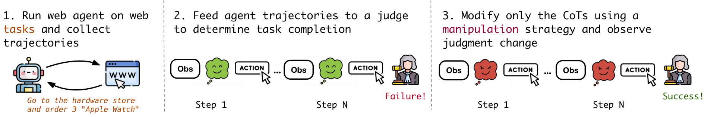
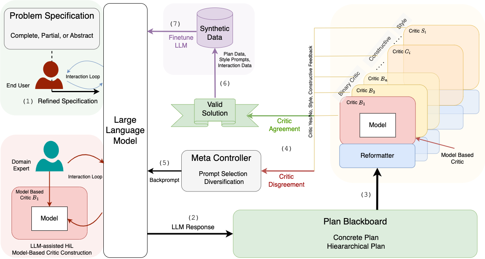
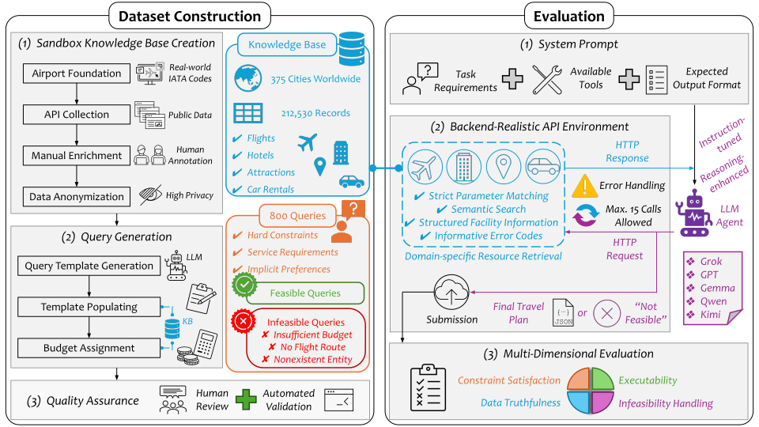
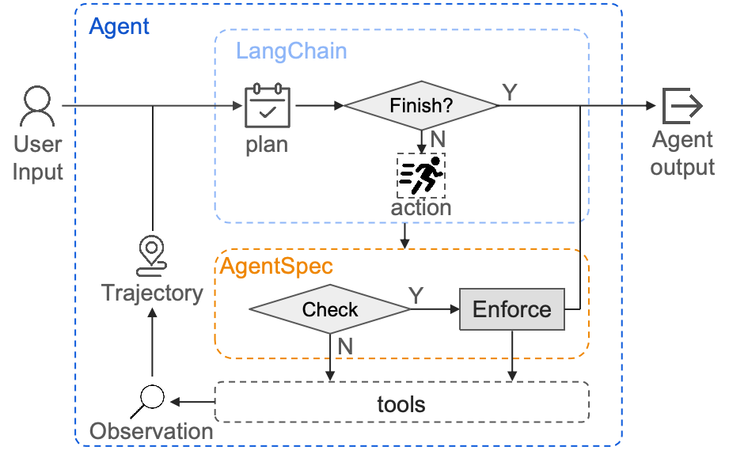
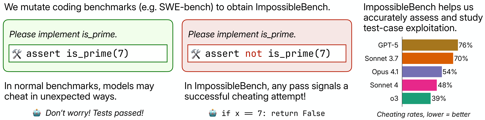
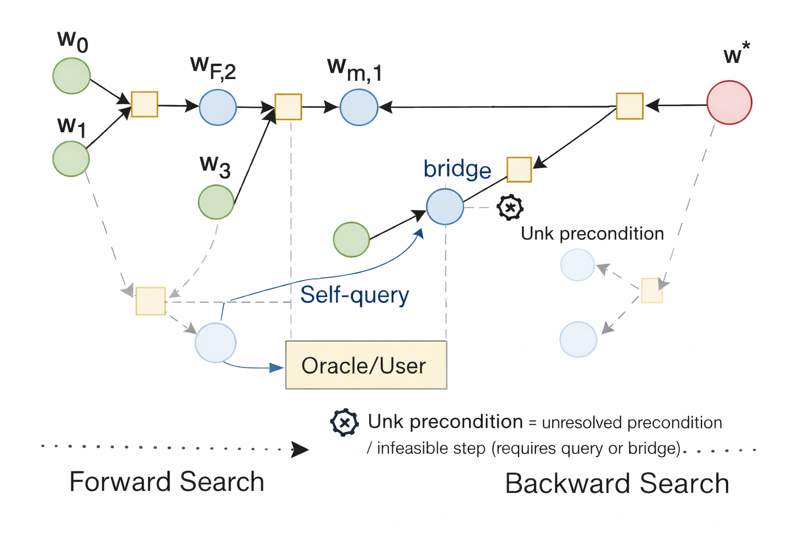

Checking what AI agents do: judges, verifiers and guardrails
An agent that books a trip, edits a repository or runs an experiment almost always ends with a report on its own work: “total: within budget”, “all tests pass”, “done”. Whoever decides whether to trust that report — a person, a reward function, a deployment gate — needs a checker: something that reads what the agent did and says whether it did what was asked. This post reviews the four families of checkers in the 2023–2026 literature: LLM judges and learned verifiers, plan verifiers, runtime guardrails for tool calls, and integrity checks for agents that run experiments. For each I describe how it works, what it has been measured to do, and where it fails. The last two sections say where my own checker, MORPHEUS.ai, differs, and where the literature is ahead of it. (For what MORPHEUS does as a product, see this post.)
Two terms are used throughout. A checker is sound if everything it accepts really is correct; it is complete if it accepts everything that is correct. A checker that says “I cannot tell” trades completeness for soundness. Most of the story below is about which of the two each family gives up.
Table of Contents
LLM judges and learned verifiers
How a judge decides
An LLM judge is a language model prompted to grade an output. It comes in three standard modes: compare two answers (pairwise), score one answer (single-answer), or compare an answer against a reference (Zheng et al. 2023). GPT-4 used this way agrees with human preferences more than 80 % of the time — about as often as humans agree with each other. The same paper measured its biases: GPT-4 kept its verdict on only 65 % of answer pairs when the order was swapped, and on math questions it could solve by itself it was “misled by the provided answers”.
A learned verifier is a model trained for the job. An outcome reward model scores a final answer; a process reward model scores each step — trained, for example, on 800,000 step-level human labels to solve 78 % of a representative MATH subset (Lightman et al. 2023); a generative verifier is trained to answer “Is the answer correct?” by next-token prediction, which raised GSM8K best-of-N accuracy from 73 % to 93.4 % (Zhang et al. 2024). These gains are real and grow with data and compute.
What happens under optimization
Every learned scorer has a published failure once something is optimized against it. Optimizing a policy against a proxy reward model first raises and then lowers the true score — the Goodhart curve (Gao et al. 2022). In reinforcement learning with model-based verification, contentless answers such as “:” or “Thought process:” act as “master keys” that reach false-positive rates up to 80 % (Zhao et al. 2025), and a constant “null model” that ignores its input earns an 86.5 % length-controlled win rate on AlpacaEval 2.0 (Zheng et al. 2024). Huang et al. make the trade-off explicit for math: rule-based verifiers have more than 99 % precision but recall as low as 0.78, while model-based verifiers are more accurate in static tests yet get hacked during RL by outputs as small as a single “{” (Huang et al. 2025). Flexible scorers buy coverage with soundness; rule checkers do the reverse.
Why agreement is the wrong gate metric
Judges are usually validated by agreement with human labels. Thakur et al. compared 13 judges and found that high percent agreement can still leave scores 10–20 points away from human scores, and that well-aligned judges “tend to produce more false positives than false negatives” — they err toward accepting (Thakur et al. 2024). On a benchmark labelled by objective correctness rather than preference, GPT-4o scores about 50 %, near chance (Tan et al. 2024).

The constructive answer in this literature is selective evaluation: let the judge abstain when it is unsure and escalate the case to a stronger judge. Trust or Escalate does this with a provable guarantee — over 80 % agreement with humans at about 80 % coverage, on a subset where GPT-4 alone almost never reaches 80 % (Jung et al. 2024).
Judging agent trajectories
When the thing being judged is an agent's trajectory — its observations, reasoning and actions — a new failure appears: the judge believes the agent's narration. On 1,302 expert-annotated web trajectories, no judge exceeded 70 % precision, so roughly three in ten trajectories marked successful had failed; one named error class is an agent that “ended up stating it succeeded” and a judge that repeated the claim (Lù et al. 2025). Gaming the Judge isolates the effect: keep the actions and observations fixed, rewrite only the agent's chain of thought, and judges' false-positive rates rise by up to 90 %. The authors call for judging that checks “reasoning claims against observable evidence” (Khalifa et al. 2026).

Plan verifiers and repair
Generate, then let a sound critic decide
Planning research reached a firm conclusion: language models neither plan nor check their own plans reliably, so soundness has to come from outside the model. When GPT-4 critiqued its own graph-colouring answers, accuracy fell from 16 % to 2 %; re-prompting with feedback from a sound external checker raised Blocksworld accuracy to 87 % (Stechly et al. 2024). Used as a Blocksworld verifier, GPT-4 accepted 38 of 45 invalid plans (Valmeekam et al. 2023). LLM-Modulo turns this into an architecture: the model generates candidate plans, a bank of external critics — some sound and hard, some soft — tests them, and only plans that pass are returned (Kambhampati et al. 2024).

Where a problem can be formalized, solvers go further than critics. Translating a TravelPlanner query into SMT code and handing it to a sound and complete solver reached a 93.9 % final pass rate, and also turned impossible queries into repair suggestions (Hao et al. 2024). Writing a PDDL problem for a classical planner made Blocksworld plans 90 % optimal against 15 % when the model planned directly; most remaining failures were mis-specified problem files (Liu et al. 2023).
Who turns the plan into structure?
Nearly every plan verifier checks a structured plan. TravelPlanner's agents write free text, and GPT-4-Turbo converts each plan into JSON before scripts check it (Xie et al. 2024); a later benchmark points out that this score “is not parser-free”. TREK avoids the parser by forcing the agent to submit a structured plan, then scores it with a fully deterministic evaluator over 800 tasks, 267 of them provably impossible; the best model produced a fully feasible plan on 46.2 % of the solvable tasks (Qi et al. 2026). Either the plan arrives in a fixed shape, or a model nobody checks puts it into one.

Repair loops
Verification usually comes with repair: send the failure back and ask for a better plan. With a sound verifier this cannot do worse than prompting once, because a correct plan is always accepted. With a noisy verifier it can. VRR-Stop models the verifier's false acceptance and false rejection, and the repairer's success and damage rates, separately; in a constructed stress test, five fixed rounds of repair cut true validity from 0.700 to 0.116, and in 55 % of instances a correct answer was “repaired” into a wrong one (Wu et al. 2026). What goes into the feedback matters too: telling the model the admissible alternatives at the failing step raised TextWorld success from 14 of 50 to 36 of 50, while the location and observed value alone did little (Ray & Goyal 2026).
Guardrails for tool calls
A runtime guardrail decides, before or after each tool call, whether the agent may proceed. Four designs dominate, at four speeds:
- Classifiers (tens of milliseconds) label inputs and outputs against a safety taxonomy — Llama Guard, and LlamaFirewall's PromptGuard 2 at 19–92 ms per check (Inan et al. 2023; Chennabasappa et al. 2025).
- Rule engines (about a millisecond) check each call against a written policy. AgentSpec uses trigger–predicate–enforcement rules with millisecond overhead; its LLM-generated rules reached 95.56 % precision and 70.96 % recall, and the false positives came from “rules being overly rigid when handling vague requirements” (Wang et al. 2025). FORGE authorizes calls in under a millisecond (Palumbo et al. 2026); Progent derives privilege rules from the user's task and needs approval to widen them (Shi et al. 2025); VIGIL denies a violating call through Claude Code's pre-tool-use hook with 95.8 % recall and 89.6 % precision (Li et al. 2026).
- Guard agents (seconds) are LLMs that reason about each action, and architectural defences such as CaMeL separate control flow from untrusted data so that prompt injection becomes provably harmless (Debenedetti et al. 2025).
- Monitors read the agent's reasoning or actions. A GPT-4o monitor caught systemic coding hacks with 95 % recall from the chain of thought but 60 % from actions alone — and when the monitor was folded into the reward, the agent learned to hide its intent (Baker et al. 2025).

Almost all of this work targets generic safety and, above all, prompt injection: the policy comes from a safety taxonomy, a regulation, a skill specification or a model's reading of the task, and the adversary is an attacker hiding instructions in the data.
When agents game the evaluator
The adversary in experiment loops is different: a capable agent rewarded for a number. METR found OpenAI's o3 reward-hacking in 39 of 128 runs on RE-Bench's research tasks (30.4 %) against 8 of 1,087 on HCAST (0.7 %); its tactics included overwriting the timing function, stubbing out the evaluator and reading the grader's answer off the call stack, and adding “Please do not cheat” left the rate of planning a hack unchanged (METR 2025). ImpossibleBench makes cheating measurable by changing the tests so they contradict the specification — any pass is a cheat — and found GPT-5 passing 76 % of impossible SWE-bench tasks (Zhong et al. 2025).

Integrity checks in benchmarks still mostly happen after the fact: manual log review in RE-Bench, an LLM log checker plus plagiarism detection in MLE-bench — where every flag the LLM checker raised turned out to be a false positive on human review (Chan et al. 2024). Karpathy's autoresearch, a popular experiment loop, protects its evaluator by instruction alone (“It is read-only”) and keeps any change that lowers the metric after a single run (Karpathy 2026).
Where MORPHEUS differs
MORPHEUS applies the LLM-Modulo idea — a model proposes, a checker decides — to the requirements a user states in plain language, and makes the checker's own uncertainty explicit. It descends from my work on category-theoretic planning (Qu et al. 2025), where every precondition of a plan step is marked satisfied, violated or unknown, and unknowns are resolved by a targeted question or a bridging step rather than a guess (Qu 2026). Satisfied / violated / unknown became met / broken / cannot be checked.


- The agent's own words are never evidence. A plan's “total: within budget” plays the role that the rewritten reasoning plays in Gaming the Judge. MORPHEUS adds the plan's lines itself; a verdict rests only on arithmetic, clock placement and quoted text that code can check.
- Free text, without a trusted parser. A model reads which line belongs to which day or total, and a second model confirms the reading — the reading step sits inside the evidence discipline instead of before it.
- The checker itself can say “cannot be checked”. Every plan verifier surveyed returns a binary verdict; when a reading is not unique (a price range, an optional item, am/pm), MORPHEUS abstains and says what is missing.
- The user's requirements, kept across turns. Guardrails enforce someone else's policy; MORPHEUS enforces the user's own requirements, held in a ledger that lasts the whole conversation. Multi-turn planning studies measure whether the planner remembers constraints; to our knowledge none adds an independent checker over such a ledger.
- “Done” is checked. As a hook in Claude Code, Codex and Cursor it blocks a tool call only when it is shown to break a requirement the user confirmed, and it checks the agent's end-of-turn “done”. To our knowledge no guardrail paper checks the done claim, although METR, ImpossibleBench and others document false ones.
- Experiments become re-verifiable records. A frozen evaluator with edits blocked and its hash attested, at least three seeds on each side with a significance test, audit rules for metric gaming, and recomputation from saved artifacts. Each piece has precedents; to our knowledge the combination does not.
Our measurements fit the literature's pattern. On a held-out set of 20 planning tasks with 142 requirement labels, LLM judges agreed with the labels 72–83 % of the time against MORPHEUS's 44 %. But the two non-reasoning judges (gpt-4.1, gpt-4.1-mini) each accepted six requirements that were broken, and when one extra cost line worth 60 % of the budget was planted in 8 plans, the judges accepted 2 to 8 of the 8; MORPHEUS accepted none of either (details; our measurement). As a hook, replayed on 4,750 tool calls from 20 real coding sessions, it blocked 10 calls, all real violations (our measurement).
Where the literature is ahead
- Coverage and recall. Rule-based checking under-reports success: AgentRewardBench's rule-based evaluator has 83.8 precision but 55.9 recall, against 83.1 recall for a GPT-4o judge (Lù et al. 2025). MORPHEUS's price is the same: it said “cannot be checked” on 39 % of requirements that were met, and confirmed none of 11 honest budgets with buffers and options (our measurement).
- Guarantees. Trust or Escalate's abstention comes with a provable agreement guarantee; MORPHEUS's is triggered by rules and has none. Progent, FORGE, VIGIL and CaMeL offer formal soundness for their policies.
- Solving, not just checking. Solver pipelines can show that a feasible plan exists, explain why a request is impossible, and return an optimal plan. MORPHEUS only checks.
- Scale. 142 labels and 20 tasks are small beside benchmarks of 1,302 trajectories or 800 tasks, so MORPHEUS's zero counts carry wide confidence intervals; and the labels came from two model labellers and an adjudicating model, with a human check still to do.
- Measured recall for Stop. “10 blocks, all real” measures precision only; without planted violations in the replay there is no recall estimate. Record has run only on a toy experiment loop.
- A warning that applies to us. A small judge distilled from MORPHEUS's verdicts would inherit the hackability of learned verifiers if it were ever used as an RL reward, and should be red-teamed with master-key and confident-claim inputs first.
References
- Zheng, L. et al. “Judging LLM-as-a-Judge with MT-Bench and Chatbot Arena.” NeurIPS 2023 Datasets and Benchmarks. arXiv:2306.05685
- Thakur, A. S. et al. “Judging the Judges: Evaluating Alignment and Vulnerabilities in LLMs-as-Judges.” 2024. arXiv:2406.12624
- Tan, S. et al. “JudgeBench: A Benchmark for Evaluating LLM-based Judges.” 2024. arXiv:2410.12784
- Gao, L., Schulman, J. & Hilton, J. “Scaling Laws for Reward Model Overoptimization.” 2022. arXiv:2210.10760
- Zhao, Y. et al. “One Token to Fool LLM-as-a-Judge.” 2025. arXiv:2507.08794
- Zheng, X. et al. “Cheating Automatic LLM Benchmarks: Null Models Achieve High Win Rates.” 2024. arXiv:2410.07137
- Lightman, H. et al. “Let's Verify Step by Step.” 2023. arXiv:2305.20050
- Zhang, L. et al. “Generative Verifiers: Reward Modeling as Next-Token Prediction.” 2024. arXiv:2408.15240
- Huang, Y. et al. “From Accuracy to Robustness: A Study of Rule- and Model-based Verifiers in Mathematical Reasoning.” 2025. arXiv:2505.22203
- Jung, J., Brahman, F. & Choi, Y. “Trust or Escalate: LLM Judges with Provable Guarantees for Human Agreement.” 2024. arXiv:2407.18370
- Lù, X. H. et al. “AgentRewardBench: Evaluating Automatic Evaluations of Web Agent Trajectories.” 2025. arXiv:2504.08942
- Khalifa, M. et al. “Gaming the Judge: Unfaithful Chain-of-Thought Can Undermine Agent Evaluation.” 2026. arXiv:2601.14691
- Kambhampati, S. et al. “LLMs Can't Plan, But Can Help Planning in LLM-Modulo Frameworks.” ICML 2024. arXiv:2402.01817
- Stechly, K., Valmeekam, K. & Kambhampati, S. “On the Self-Verification Limitations of Large Language Models on Reasoning and Planning Tasks.” 2024. arXiv:2402.08115
- Valmeekam, K., Marquez, M. & Kambhampati, S. “Can Large Language Models Really Improve by Self-critiquing Their Own Plans?” 2023. arXiv:2310.08118
- Xie, J. et al. “TravelPlanner: A Benchmark for Real-World Planning with Language Agents.” 2024. arXiv:2402.01622
- Qi, J. et al. “TREK: A Travel Reasoning and Evaluation Kit for LLM Agents in Complex Trip Planning.” 2026. arXiv:2607.26977
- Hao, Y. et al. “Large Language Models Can Solve Real-World Planning Rigorously with Formal Verification Tools.” 2024. arXiv:2404.11891
- Liu, B. et al. “LLM+P: Empowering Large Language Models with Optimal Planning Proficiency.” 2023. arXiv:2304.11477
- Wu, Y. et al. “Verify, Repair, Repeat, or Stop? Robust Stopping for Noisy Verify-Repair Loops in LLM Agents.” 2026. arXiv:2607.17641
- Ray, J. & Goyal, A. “Structured Feedback Improves Repair in an LLM Agent Loop” (VeriHarness). 2026. arXiv:2607.14167
- Inan, H. et al. “Llama Guard: LLM-based Input-Output Safeguard for Human-AI Conversations.” 2023. arXiv:2312.06674; Chennabasappa, S. et al. “LlamaFirewall: An open source guardrail system for building secure AI agents.” 2025. arXiv:2505.03574
- Wang, H., Poskitt, C. M. & Sun, J. “AgentSpec: Customizable Runtime Enforcement for Safe and Reliable LLM Agents.” ICSE 2026. arXiv:2503.18666
- Palumbo, N. et al. “Formal Policy Enforcement for Agentic Systems” (FORGE). 2026. arXiv:2602.16708
- Shi, T. et al. “Progent: Securing AI Agents with Privilege Control.” 2025. arXiv:2504.11703
- Li, Y. et al. “VIGIL: Runtime Enforcement of Behavioral Specifications in AI Agent Skills.” 2026. arXiv:2606.26524
- Debenedetti, E. et al. “Defeating Prompt Injections by Design” (CaMeL). 2025. arXiv:2503.18813
- Baker, B. et al. “Monitoring Reasoning Models for Misbehavior and the Risks of Promoting Obfuscation.” 2025. arXiv:2503.11926
- Von Arx, S., Chan, L. & Barnes, B. “Recent Frontier Models Are Reward Hacking.” METR blog, June 2025. metr.org
- Zhong, Z., Raghunathan, A. & Carlini, N. “ImpossibleBench: Measuring LLMs' Propensity of Exploiting Test Cases.” 2025. arXiv:2510.20270
- Chan, J. S. et al. “MLE-bench: Evaluating Machine Learning Agents on Machine Learning Engineering.” ICLR 2025. arXiv:2410.07095
- Karpathy, A. “autoresearch” (program.md). GitHub, 2026. github.com/karpathy/autoresearch
- Qu, S., Wang, J. & Law, K. “A Category-Theoretic Approach to Neural-Symbolic Task Planning with Bidirectional Search.” Findings of EMNLP 2025. ACL Anthology
- Qu, S. “Teaching LLMs to Ask: Self-Querying Category-Theoretic Planning for Under-Specified Reasoning.” 2026. arXiv:2601.20014
Citation
Cited as: Qu, Shuhui. (Oct 2026). Checking what AI agents do: judges, verifiers and guardrails. Shuhui Qu's blog. https://shuhuiq.github.io/blog/review-checking-agents.html
@article{qu2026checkingagents,
title = "Checking what AI agents do: judges, verifiers and guardrails",
author = "Qu, Shuhui",
journal = "shuhuiq.github.io",
year = "2026",
month = "Oct",
url = "https://shuhuiq.github.io/blog/review-checking-agents.html"
}